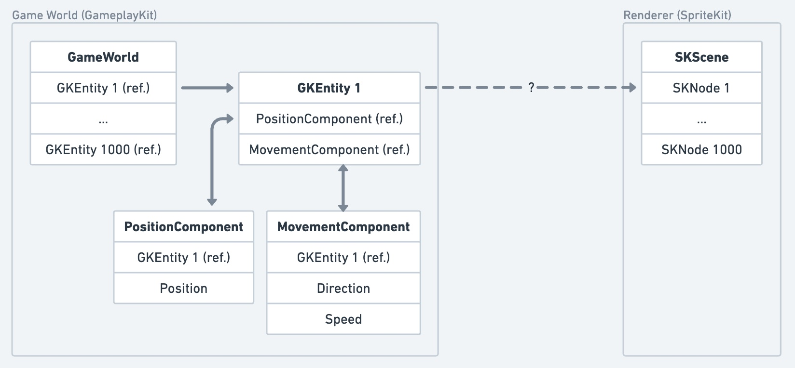
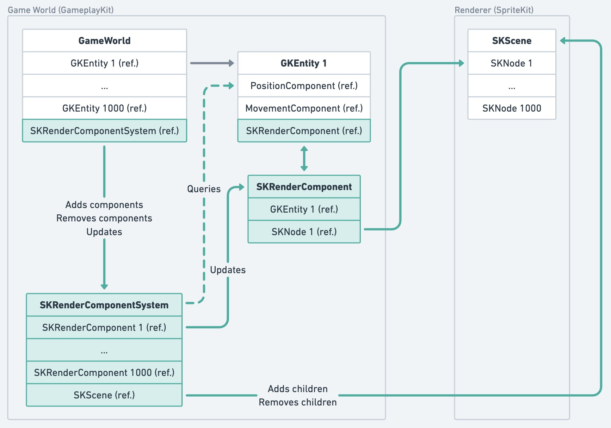
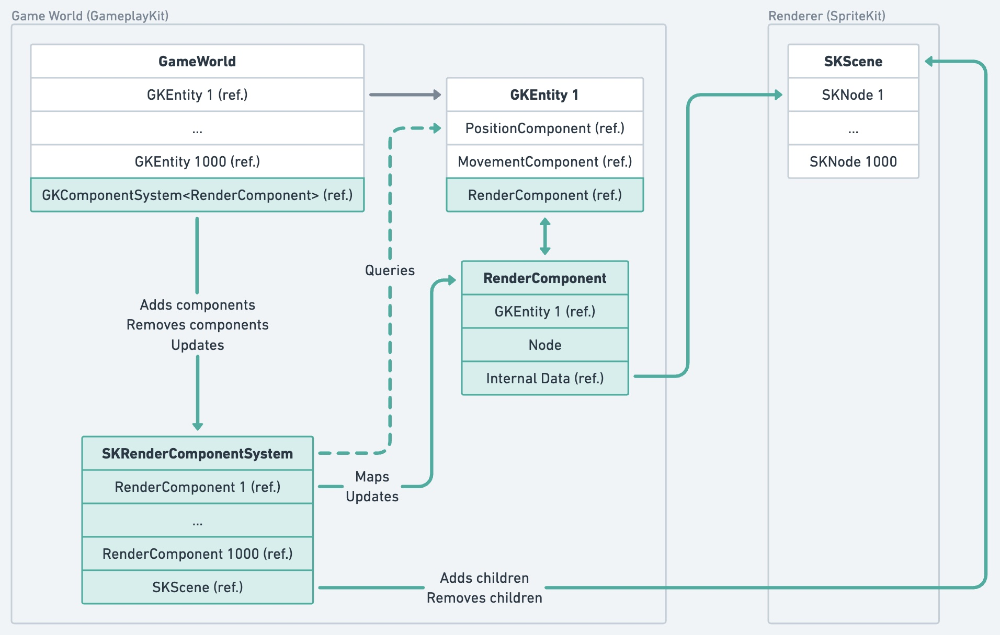

In this article I will explore clean integration strategies between SpriteKit and GameplayKit. Any comments or feedback are welcome. There is a Twitter thread, or you can just send me an email.
Introduction
Deciding on the technologies for your iOS game can be daunting. Especially when you're just starting, and want to keep your options open while still coming to grips with XCode, Swift and the whole Apple technology stack.
To tell you the truth, I've been struggling with this exact problem myself. Do I use SpriteKit? GameplayKit? I heard GameplayKit's performance wasn't great, should I roll my own ECS? Should I use an existing one? What if the maintainer stops working on it? Should I even use an ECS? Screw it, I'll just use Unity! Should I use Unity? Learning it is going to take a lot of effort, and UI Toolkit sucks compared to SwiftUI anyway. What if something doesn't work well? I want to understand what my game's engine is doing goddamnit!
In this exploration article I want to take the first step in untangling this jungle of possibilities. I am going to assume that I'm working with the default Apple stack (GameplayKit, SpriteKit, SwiftUI) and focus on strategies to build a clean game architecture using those technologies. I'll talk about why I chose to go with the default Apple stack instead of Unity or a different game engine in a future article.
The problem
Stated clearly, I want to make a game using SpriteKit as the rendering framework, and GameplayKit for representing my game world. And I want to tackle the following questions:
- What are my options for integrating these two technologies together?
- Which architecture allows me the most flexibility if I want to easily switch between SpriteKit and a different rendering engine down the line? Like pure Metal for example.
- What is the performance impact of each option? How does it compare to straight SpriteKit?
Considering my options
First let's start with a static view of the simulation without any integration concerns. This will act as a sort of baseline for other strategies:

The dashed arrow between GKEntity 1 and SKNode 1 is the heart of our subject. When an
entity changes or is destroyed, how do we apply that change to the corresponding SKNode? And even
before that, when we add a new entity to the game world how do we create and configure a corresponding node?
Strategy 1: The Front-door
Because components are the data bags of entities, a straightforward solution is to create an SKRenderComponent
to hold a reference to the SKNode and an SKRenderComponentSystem that holds a
reference to the SKScene and handles creating, updating and destroying nodes:
- When a component is added to the rendering system: The underlying node is added to the scene.
- When a component is removed from the rendering system: The underlying node is removed from the scene.
- Every update cycle, the rendering system uses the
PositionComponentdata to update the node's position.
It would look like this:
The main benefit of this approach is that it's easy to reason about. The rendering system queries other components and only updates the component type it is responsible for. That being said, consider how you would create a new entity. It will probably look something like:
// During initialization
let entity = GKEntity()
entity.addComponent(PositionComponent(CGPoint(x: 0, y: 0)))
entity.addComponent(MovementComponent(direction: CGPoint(x: 1, y: 1), speed: 50))
entity.addComponent(SKRenderComponent(node: SKShapeNode(circleOfRadius: 50)))
// When the rendering system is ready
let renderingSystem: GKComponentSystem<SKRenderComponent> = SKRenderComponentSystem()
renderingSystem.addComponent(foundIn: entity)
// During an update cycle
renderingSystem.update()
Swift does not support covariant generic types, so we can't define the component system as a generic
GKComponentSystem<GKComponent>, we need to specifically reference a
GKComponentSystem<SKRenderComponent>.
Furthermore, we need to use the SpriteKit-specific component whenever we initialize an entity that needs to be rendered. In order to swap to a different rendering engine with this approach, we would have to change a lot of entity initialization code and even then we wouldn't be able to freely swap rendering engines because of the covariance issue.
There are ways to improve this though:
- We could define a
RenderComponentprotocol to be able to reference anyGKComponentSystem<RenderComponent>as a rendering system. This allows us to simply pass such a rendering system to the game world and not care about the specific implementation. - Instead of the game world creating the
SKRenderComponentit could ask the rendering system to provide one given a genericNodedefinition. This does get complicated though, as the rendering system would need to be available to the game world before the scene is ready. Not the end of the world, but it means theSKScenereference held by the rendering system will need to be made optional.
Strategy 2: The Backdoor
Building on the idea of a generic Node definition, what if instead of using an engine-specific
SKRenderComponent we instead used a more abstract RenderComponent that stored a
Node definition for the rendering system to then use? The covariance issue would be eliminated as
all rendering systems would handle the same RenderComponent. And on top of that we don't have to
know anything engine-specific about the node when creating the entity. *chef's kiss*
But wait... how does the rendering system know which node to update? Well that's where the "backdoor" part
comes-in. When the addComponent method is called on the rendering system, we will create the node, attach it
to the scene and inject a reference back into the entity. Either directly in the RenderComponent or
using a separate component like our good old friend SKRenderComponent or SpriteKit's own
GKSKNodeComponent. *actual chef's kiss*
Enough talk, here is the static view for this strategy:
And usage would look like this:
// During initialization
let entity = GKEntity()
entity.addComponent(PositionComponent(CGPoint(x: 0, y: 0)))
entity.addComponent(MovementComponent(direction: CGPoint(x: 1, y: 1), speed: 50))
entity.addComponent(RenderComponent(node: Circle(ofRadius: 50)))
// When the rendering system is ready
let renderingSystem: GKComponentSystem<RenderComponent> = SKRenderComponentSystem()
renderingSystem.addComponent(foundIn: entity)
// During an update cycle
renderingSystem.update()
This has a nice side-benefit I didn't discuss in the previous strategy, which is that other component systems
can now query the RenderComponent in an engine-agnostic way.
With this approach swapping the rendering engine is just a matter of passing a different instance of
GKComponentSystem<RenderComponent> to the game world, there is nothing else to do!
Performance analysis
In order to test the performance of both strategies (and a SpriteKit-only solution for reference), I ran the following simulation:
- Spawn a number of circles of varying radii around the center of the scene
- Move each sprite in a random direction at a random speed
On an iPhone 14 Pro I got the same results for all strategies. 60fps up to 1000 entities, 30fps at 2000 entities and 15fps at 4000 entities.
Doing a cursory time-complexity analysis (as far as I know, we don't have access to the implementation details of GameplayKit, especially around caching). I found the following:
- SpriteKit-only: O(n) with n the number of nodes. This is inline with the results above.
- Strategy 1 & 2: O(K*n) with n the number of entities, and K a factor that depends on the number of components per entity, the number of queried components per cycle as well as the implementation details of GameplayKit.
With this knowledge I was able to stress the system simply by adding more dummy components to the entities, and making sure they were queried and used (to avoid any optimization paths) by the rendering system. The results weren't straightforward to understand and I suspect GameplayKit is trying hard to optimize what it can, but I did notice a degradation in performance as I added components. On the same iPhone 14 Pro, at 1000 entities I got 60fps for 3 components, 45fps for 8 components queried by only one system and 40fps for 8 components queried by 2 systems. Strangely querying more components in the same system didn't lead to much more degradation?
In any case, I got enough information from this to move forward, and I'll do a more in-depth analysis once I get to exploring GameplayKit itself and the ECS part of the architecture.
Conclusion
The 2nd "Backdoor" strategy seems to fit the requirements quite nicely. The API for creating entities is clean with no
rendering engine specific concepts, and swapping a different engine is just a matter of wrapping it in a
GKComponentSystem<RenderComponent> and passing it to the game world.
The caveat with both strategies though is that GameplayKit's implementation of ECS does not scale well with the number of components in an entity. My next objective is to explore how GameplayKit can be improved (or replaced?) in order to have a clean and performant overall architecture.